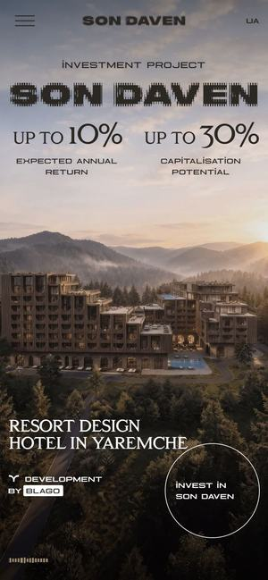

Awwwards 오늘의 사이트 · 2026.06먼저 보세요01Son Daven
와 포인트전통 직물 무늬로 짠 듯한 큼직한 ‘SON DAVEN’ 글자와 양 한 마리로 시작해, 산자락의 호텔이 모습을 드러냅니다. 그 동네의 문화와 건축을 입체 화면과 영상으로 한 장씩 넘기듯 보여 줍니다.
여행의완성이라면188다산트라·미라몬티처럼 사진이 센 숙소를 ‘그 동네 이야기’로 시작하는 대표 사례 페이지. 숙소 이름을 크게 깔고 드론 컷으로 넘어가는 연출을 그대로 쓸 수 있습니다.